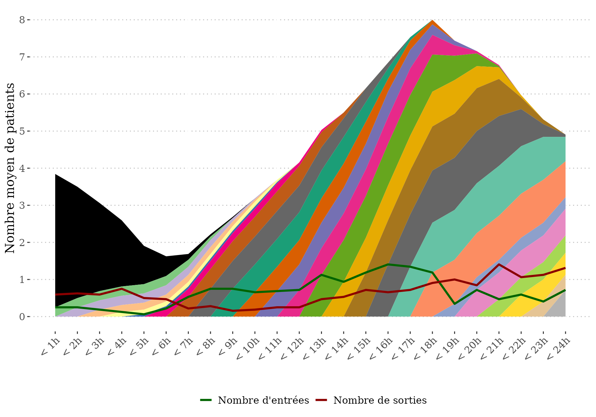
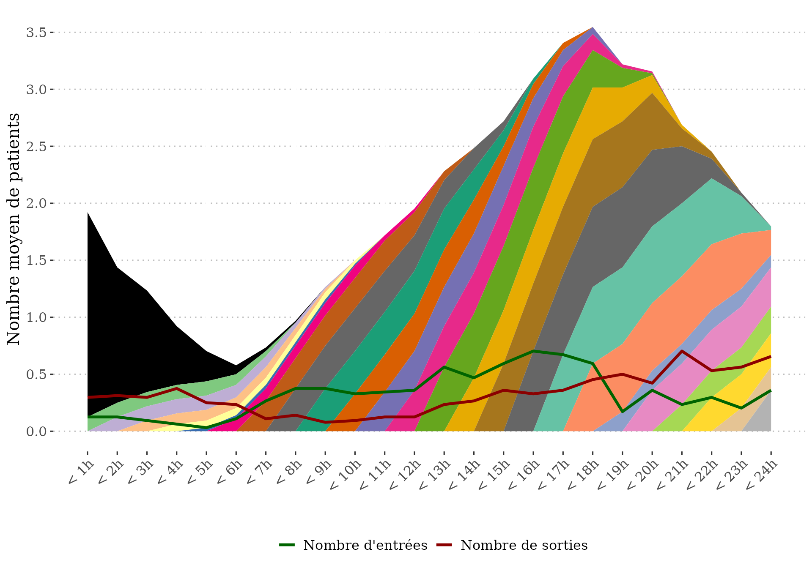
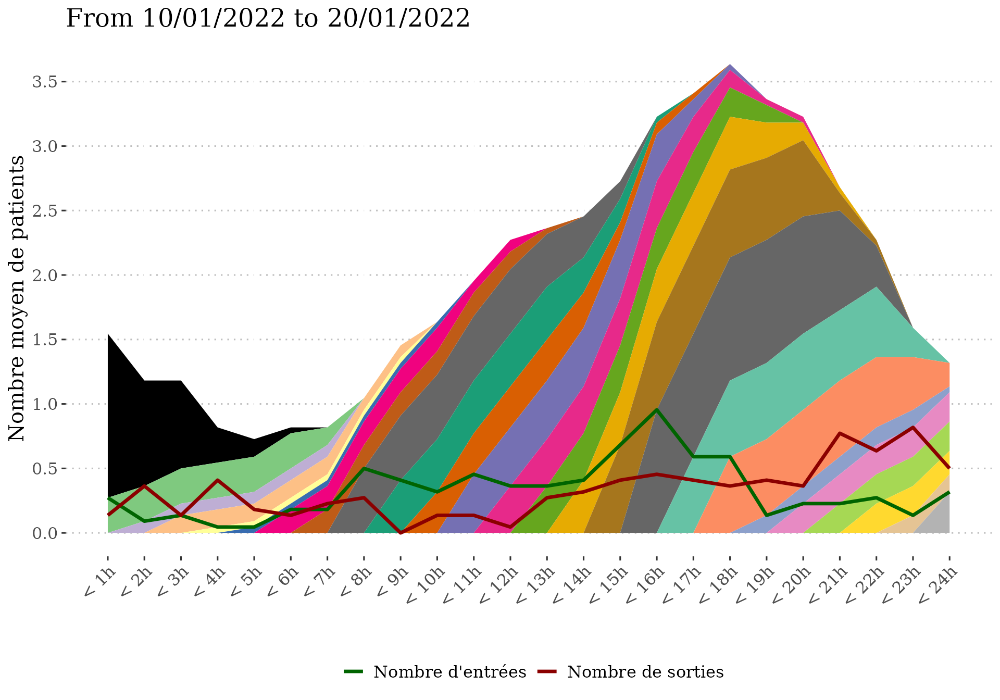
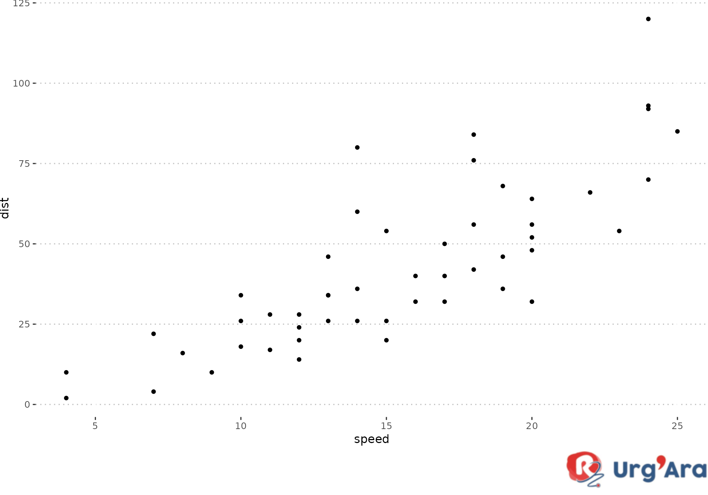
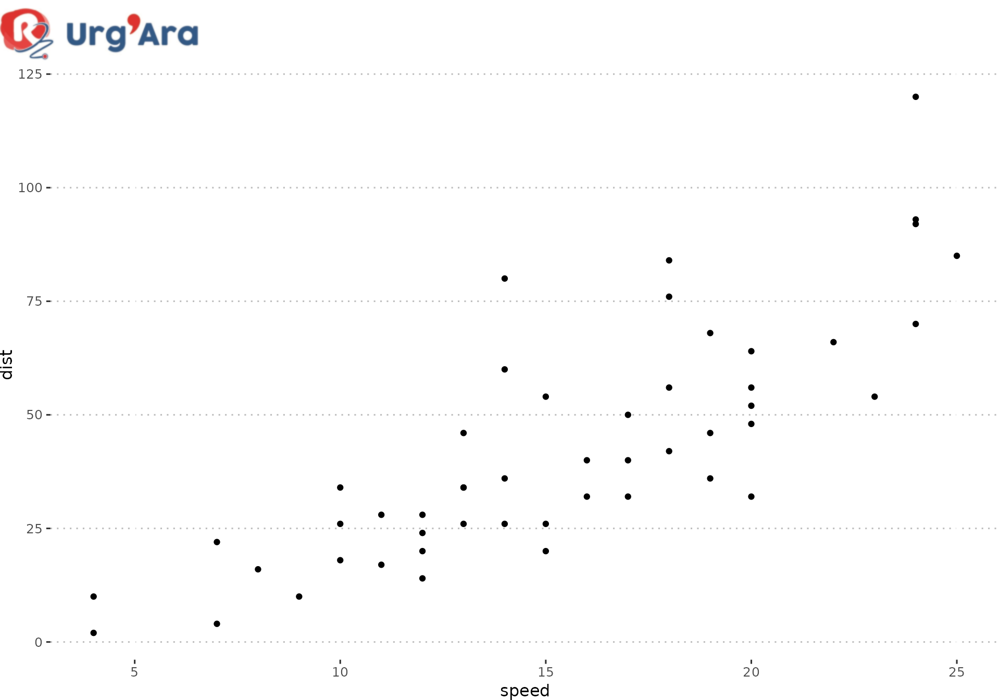
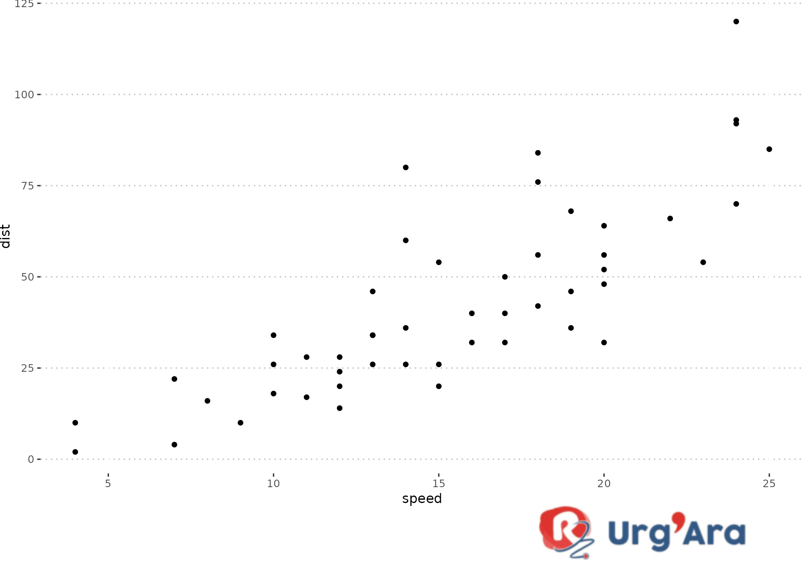
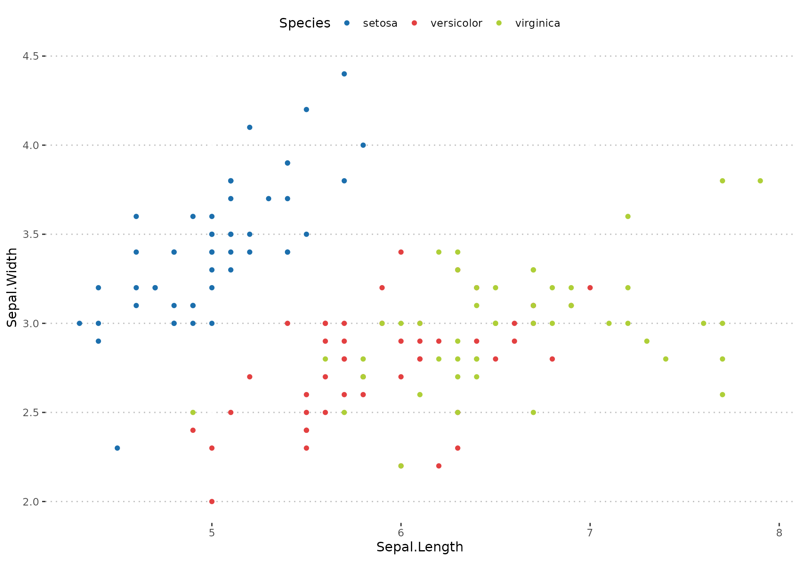
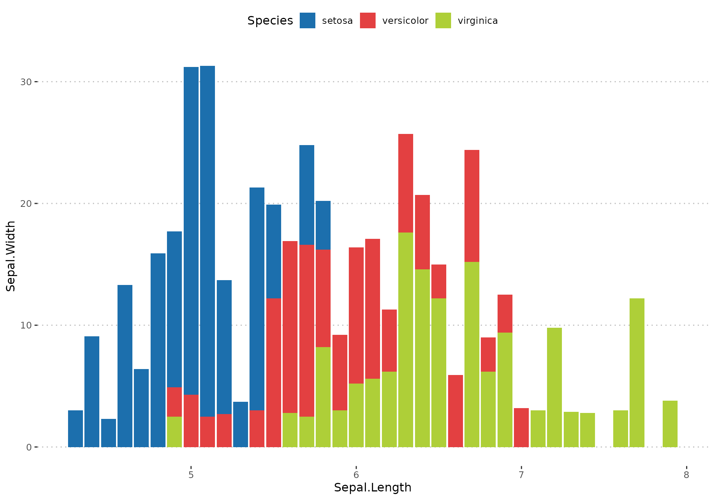
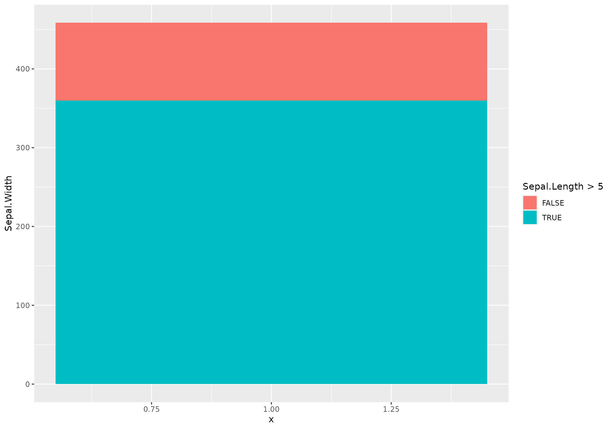
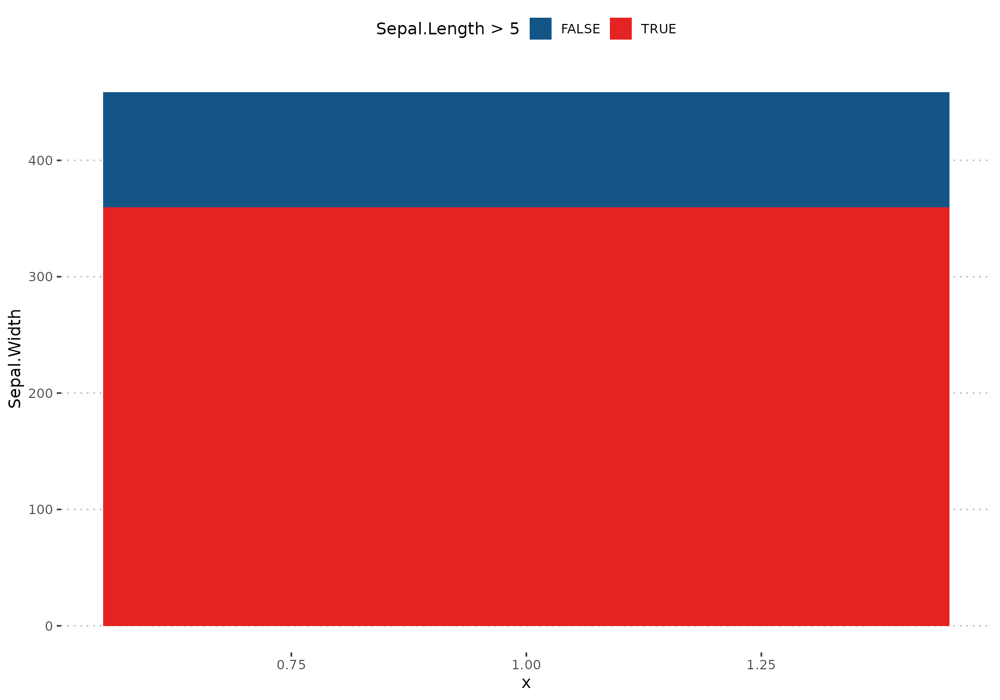

Getting-started
Getting-started.Rmd
library(rUrgAra)Exemple dataset
We will see in this vignette how rUrgAra can help in plotting charge diagram and graphs following rUrgAra’s graphical chart.
Plot a charge diagram
This exemple shows how to plot a charge diagram using rUrgAra’s plot_diag_charge() from a table containing entry and exit date/times.
#Table of entry/exit times
head(df_ex_charge)
#> ENTREE SORTIE Etablissement
#> 1 2022-01-16 16:14:00 2022-01-16 22:24:41 A
#> 2 2022-01-04 16:12:00 2022-01-04 23:38:01 A
#> 3 2022-01-12 14:18:00 2022-01-12 20:20:26 A
#> 4 2022-01-24 08:25:00 2022-01-24 16:27:53 A
#> 5 2022-01-03 19:08:00 2022-01-04 01:05:40 A
#> 6 2022-01-31 16:09:00 2022-01-31 22:54:14 A
#Charge diagram with exclusion of patients staying more than 3 days (72*60 = 4320 minutes)
# not taking into account strata
list_charge = plot_diag_charge(data = df_ex_charge, entry = "ENTREE",
exit = "SORTIE", max_LOS = 72*60)
#plot_diag_charge return two objects, a table showing for each hour of
# the day how many patient came from what hour (-1 = day before)
head(list_charge$tab)
#> # A tibble: 6 × 6
#> H_entry Hour n n_strata n_days n_avg
#> <dbl> <dbl> <int> <dbl> <dbl> <dbl>
#> 1 -1 1 115 1 32 3.59
#> 2 -1 2 76 1 32 2.38
#> 3 -1 3 57 1 32 1.78
#> 4 -1 4 33 1 32 1.03
#> 5 -1 5 17 1 32 0.531
#> 6 -1 6 5 1 32 0.156
#a charge diagram
list_charge$plot
#adding a strata to take into account that data are coming from two hospitals
list_charge_stratified = plot_diag_charge(data = df_ex_charge, entry = "ENTREE",
exit = "SORTIE", strata = "Etablissement",
max_LOS = 72*60)
#plot_diag_charge return two objects, a table showing for each hour of
# the day how many patient came from what hour (-1 = day before)
head(list_charge_stratified$tab)
#> # A tibble: 6 × 6
#> H_entry Hour n n_strata n_days n_avg
#> <dbl> <dbl> <int> <int> <dbl> <dbl>
#> 1 -1 1 115 2 32 1.80
#> 2 -1 2 76 2 32 1.19
#> 3 -1 3 57 2 32 0.891
#> 4 -1 4 33 2 32 0.516
#> 5 -1 5 17 2 32 0.266
#> 6 -1 6 5 2 32 0.0781
#a charge diagram
list_charge_stratified$plot
#Limiting the charge diagram to a set period
list_charge_stratified = plot_diag_charge(data = df_ex_charge, entry = "ENTREE",
exit = "SORTIE", strata = "Etablissement",
from = "10/01/2022", to = "20/01/2022",
max_LOS = 72*60)
#> Warning in plot_diag_charge(data = df_ex_charge, entry = "ENTREE", exit =
#> "SORTIE", : 326 rows were removed because they were outside of the studied
#> range.
list_charge_stratified$plot +
ggplot2::labs(title = "From 10/01/2022 to 20/01/2022")
Adding a company logo to a plot
This exemple shows how to add a company logo (by default UrgAra’s) to a ggplot object.
plot_cars = ggplot2::ggplot(cars, ggplot2::aes(x = speed, y = dist)) +
ggplot2::geom_point() +
ggpubr::theme_pubclean()
plot_add_logo(plot_cars)#default
plot_add_logo(plot_cars, position = "top left")#logo at the top
plot_add_logo(plot_cars, width = 0.4)#wider logo
Adding rUrgAra color palette
Applying rUrgAra palette to a color scale
plot_iris = ggplot2::ggplot(iris, ggplot2::aes(x = Sepal.Length, y = Sepal.Width, color = Species)) +
ggplot2::geom_point(size = 1.5)
plot_iris#default
plot_iris +
scale_color_UrgAra() +#Urg'Ara's color palette
ggpubr::theme_pubclean() +
ggplot2::theme(legend.key = ggplot2::element_blank())
Applying rUrgAra palette to a fill scale
plot_iris_bar = ggplot2::ggplot(iris, ggplot2::aes(x = Sepal.Length, y = Sepal.Width, fill = Species)) +
ggplot2::geom_col()
plot_iris_bar#default
plot_iris_bar +
scale_fill_UrgAra() +#Urg'Ara's color palette
ggpubr::theme_pubclean()
Applying rUrgAra palette to a dichotomous variable
plot_iris_dicho = ggplot2::ggplot(iris, ggplot2::aes(x = 1, y = Sepal.Width, fill = Sepal.Length > 5)) +
ggplot2::geom_col()
plot_iris_dicho#default
plot_iris_dicho +
scale_fill_UrgAra(palette = "duo") +#Urg'Ara's color palette
ggpubr::theme_pubclean()